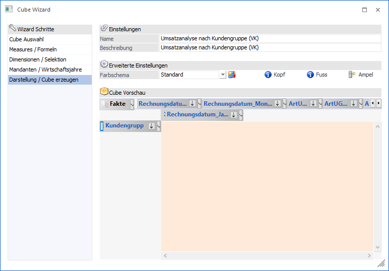
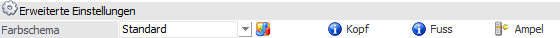
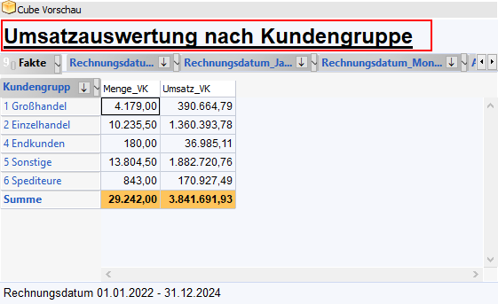
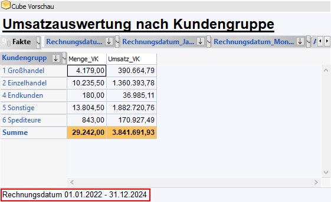
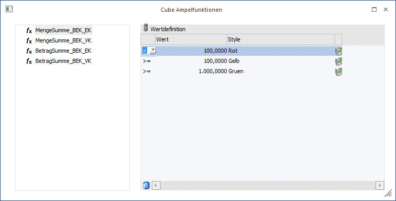
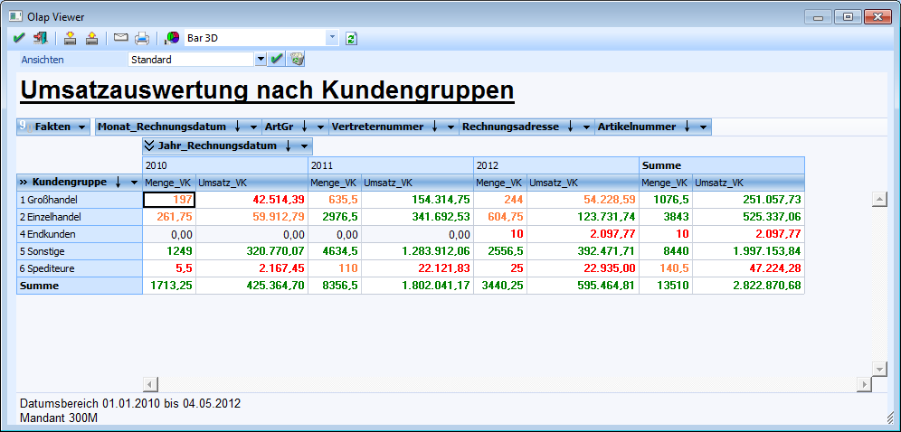
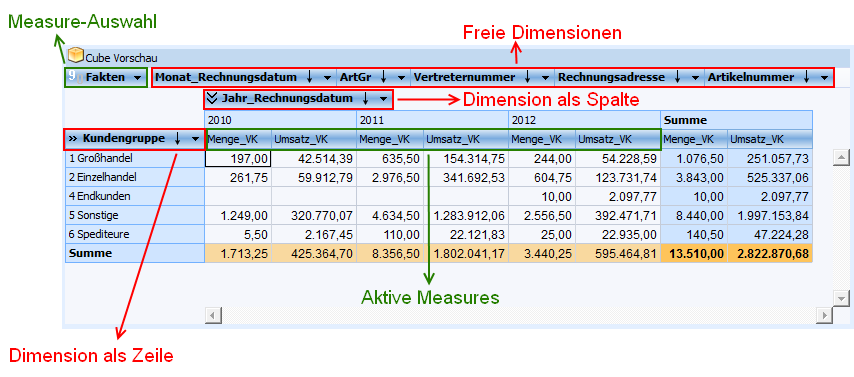
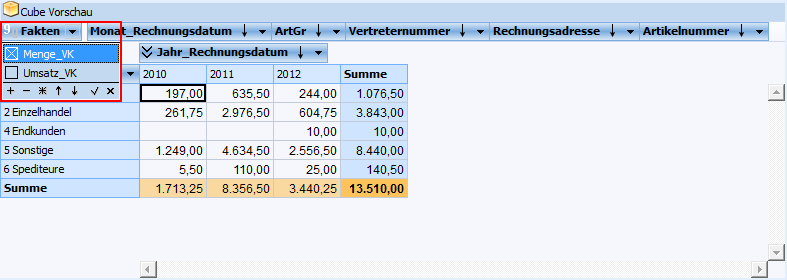

Im letzten Schritt des Wizard kann definiert werden, welche Informationen in den Zeilen und Spalten standardmäßig angezeigt werden sollen. Zusätzlich hierzu können noch Farbeinstellungen vorgenommen und der Cube erzeugt werden.

Das Fenster unterteilt sich dabei in die folgenden Bereiche:
ü Erweiterte Einstellungen
ü Cube Vorschau
Erweiterte Einstellungen

In dem Bereich "Erweiterte Einstellungen" können optische Einstellungen für den Cube vorgenommen werden.
Ø Farbschema
An dieser Stelle kann ein zuvor angelegtes Cube Design der Cube-Definition zugeordnet werden.
Hinweis
Durch Anwahl des Symbols kann das Programm "Enterprise Designs" direkt gestartet werden.
Ø Kopfbereich
Durch Anwählen dieses Buttons können benutzerdefinierte Beschriftungen für den Kopf des Cubes definiert werden.

Hinweis
Der hinterlegte Kopf wird bereits in der Cube Vorschau angewendet.

Ø Fussbereich
Durch Anwählen dieses Buttons können benutzerdefinierte Beschriftungen für den Fuß des Cubes definiert werden.

Hinweis
Der hinterlegte Fuß wird bereits in der Cube Vorschau angewendet.

Ø Ampelfunktion
Durch Anwahl dieses Buttons öffnet sich die "Cube Ampelfunktion". An dieser Stelle kann pro Measure definiert werden, ab bzw. bei welchem Wert welcher Cube Style verwendet werden soll.

Hinweis
Wurde eine Ampelfunktion an dieser Stelle definiert, so übersteuert diese Einstellung jene der im Cube Design (siehe Feld "Farbschema") hinterlegten Funktion.
Achtung
Es dürfen gleiche Cube Styles nicht mehrfach verwendet werden (auch nicht measureübergreifend).
Beispiel
Es wird eine Verkaufsanalyse erstellt in welcher die Umsätze der Kundengruppen analysiert werden. Um gezielt hervorzuheben mit welchen Gruppen besonders gute Umsätze erzielt wurden wird eine Ampelfunktion hinterlegt. Das gleiche gilt für die verkauften Stückzahlen.
ü Stückzahl unter 100 = rot
ü Stückzahl zwischen 100 und 1000 = orange
ü Stückzahl über 1000 = grün
ü Umsatz unter 50000 = rot
ü Umsatz zwischen 50000 und 100000 = orange
ü Umsatz über 100000 = grün

Cube Vorschau

Im mittleren Bereich des Fensters werden die gewählten Measures und Dimensionen dargestellt. Die hier hinterlegte Zuordnung gilt im Olap Viewer als "Standard"-Ansicht und kann dort jederzeit geändert werden.
Hinweis
Daten von Dimensionen und Measures mit Werten werden in der Vorschau erst angezeigt, wenn der Cube erzeugt wurde.
ü Dimensionen
Dimensionen können
aus dem Bereich der "Freien Dimensionen" per Drag & Drop als Spalte oder
Zeile definiert werden.
Hinweis
Auch innerhalb des Bereichs "Freie Dimensionen" können Dimensionen per Drag & Drop verschoben werden.
ü Measures
Standardmäßig werden
alle definierten Measures als "Aktive Measures" angezeigt. Über die
Measure-Auswahl "Fakten" können Measures für die direkte Anzeige deaktiviert
oder aktiviert werden.
